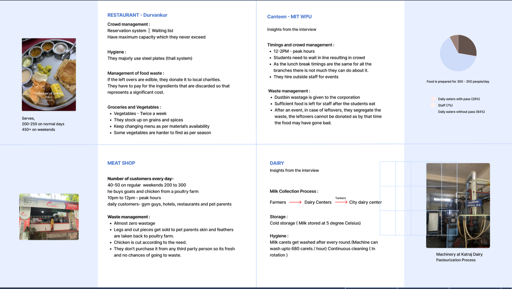
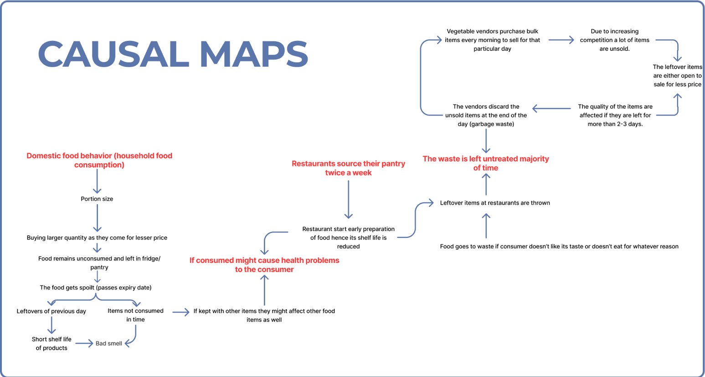
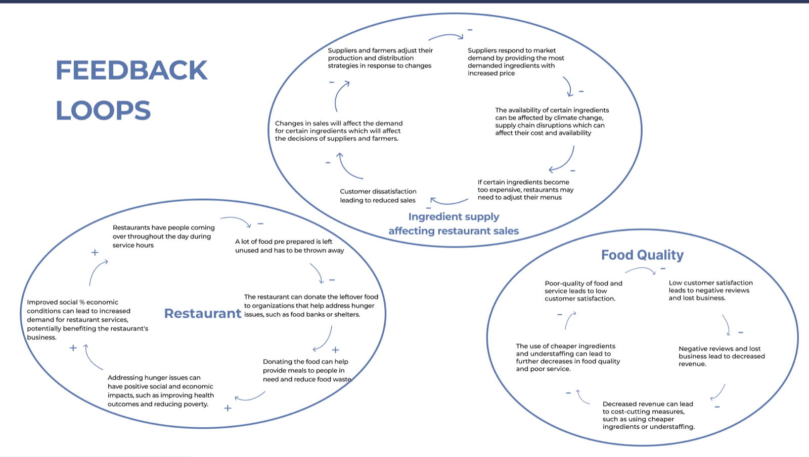
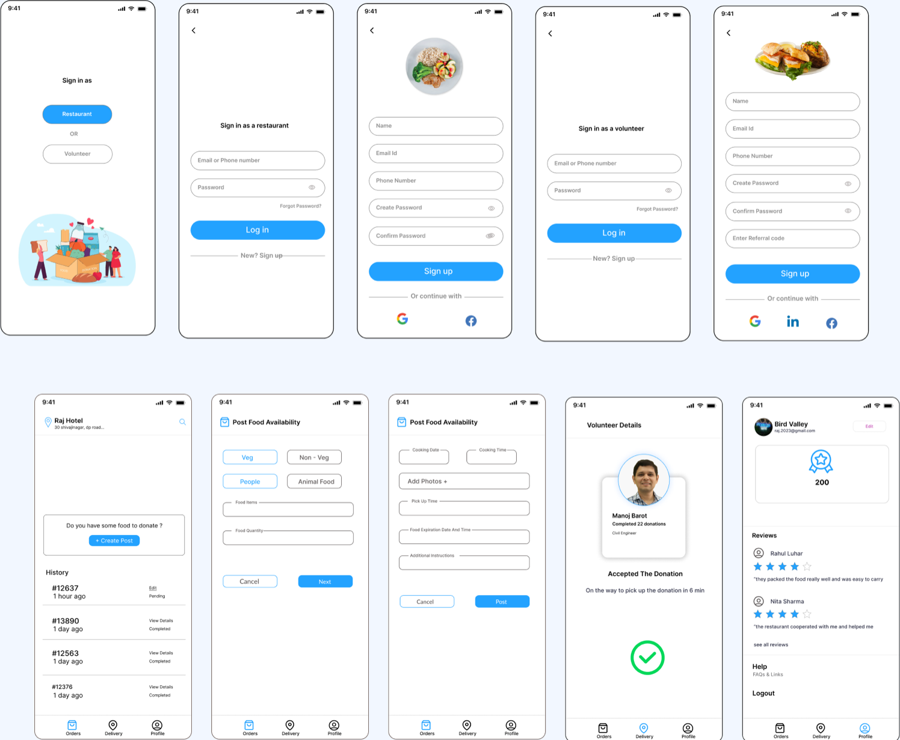
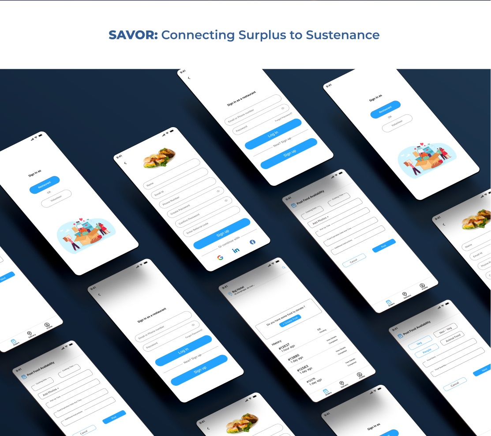

The problem
Restaurants throw away food that could feed people nearby. The waste and the hunger sit in the same neighborhoods, and nothing connects them. Perfectly edible food is discarded because there is no system to manage it and move it before it spoils.
Research
I interviewed four kinds of food business to see where surplus actually appears. Durvankur, a restaurant serving 200 to 250 people a day and 450 on weekends, donates edible leftovers to local charities and pays to dispose of the rest. The MIT WPU canteen cooks for 300 to 350 people, hits its peak between 12 and 2, and sends dustbin waste to the municipal corporation. A meat shop runs on almost zero waste, selling legs and cut pieces to pet owners and returning skin and feathers to the poultry farm. A dairy showed me the collection chain from farmers to tankers to the city center, and the cold storage and hygiene rules that govern it.

I clustered the findings by business type, then drew causal maps to trace how food ends up as waste. Restaurants source their pantry twice a week, so shelf life is short by the time a dish is prepared. Vegetable vendors buy in bulk every morning and discard what does not sell. At home, people buy more than they need because larger quantities are cheaper, and the surplus spoils in the fridge.


The solution
An application that connects restaurants with people who lack access to food. Restaurants log the type and quantity of food they can donate. Volunteers pick it up and deliver it to dedicated donation spots that are visible on a map. Every delivery earns coins that can be used for discounts, and streaks and badges keep both restaurants and volunteers motivated.
Decisions
Two sign-ins, one flow each
A restaurant and a volunteer want different things, so the app asks which you are on the first screen and never mixes the two. A restaurant sees a single question, "Do you have some food to donate?", and a history of past posts. A volunteer sees restaurants nearby with an Accept button on each.
Posting food in under a minute
Posting is a short form: veg or non-veg, for people or for animals, quantity, pickup time and expiry. The expiry field is what makes the delivery safe, so it sits on the form rather than in a settings screen.

Delivery as a map, not a list
Once a volunteer accepts, the app switches to a map with the route to the donation spot, a review step with photos, and a profile that tracks points and a two-week streak.

What I would do next
Test the posting form with the two restaurant managers I interviewed, and time it. Then test whether coins and streaks actually change volunteer behavior, or whether a simple thank-you from the restaurant does the same job.